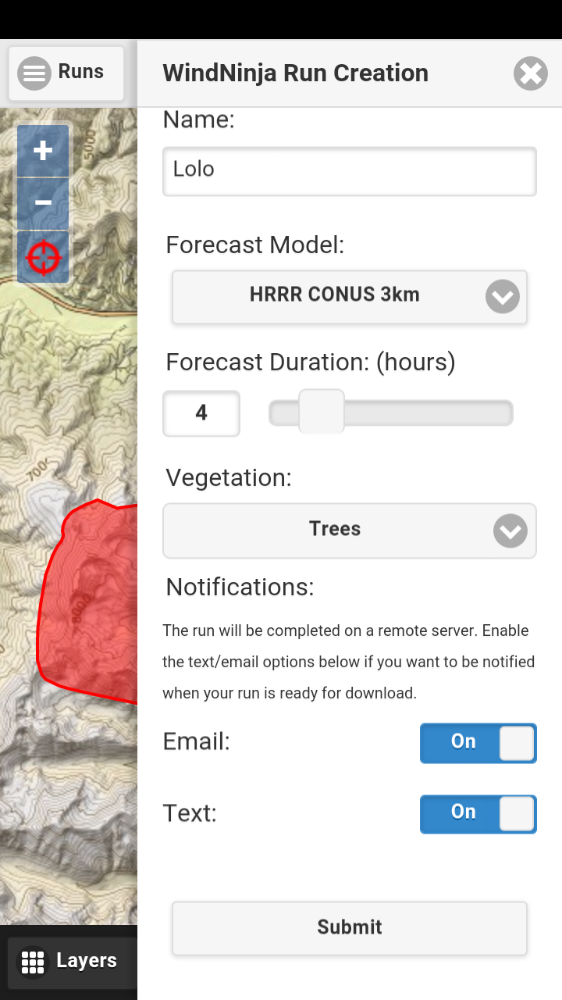
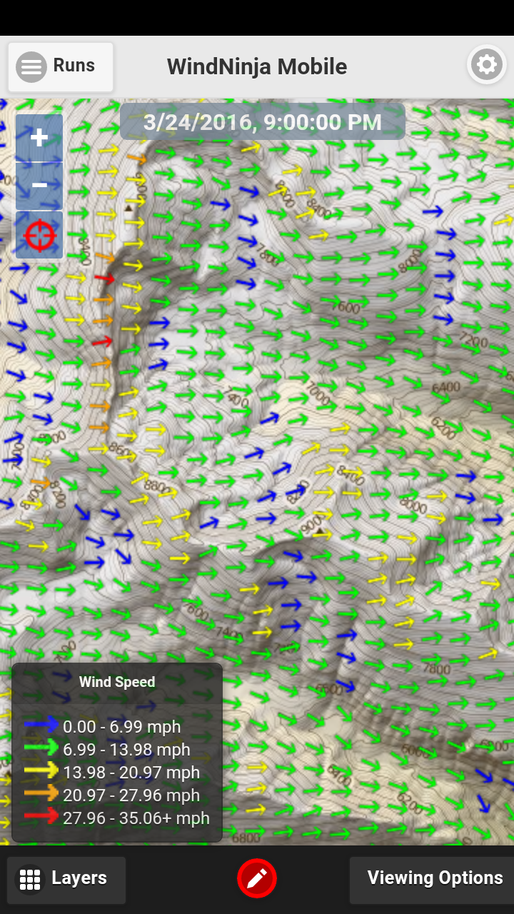

High-resolution wind predictions on your Android or iOS mobile device.
About
Get high-resolution wind predictions on your Android or iOS mobile device. WindNinja Mobile downscales National Center for Environmental Prediction (NCEP) weather forecasts, accounting for mechanical and thermal effects of the underlying terrain, to generate high-resolution surface wind predictions for your area of interest.
Features
- Request and view high-resolution, near-surface wind predictions
- View your location on the map using your device’s GPS
- Several map layers, including topo, satellite, and TopoFire available as basemaps
- Email and SMS notifications
- Connectivity/cell coverage not required to view wind predictions
- View MODIS and VIIRS fire detections and GeoMAC fire perimeters
- View the NCEP weather model forecast (in addition to the high-resolution predictions)
Using the App
- Swoop out an area of interest on the map (< 50 x 50 km).
- Enter a run name.
- Choose a forecast model.
- Choose the forecast duration.
- Select the appropriate vegetation option for your area.
- Choose notification options.
- Click submit. You’re done!
- When your high-resolution output is ready, click to download and view the output on the map.
Screenshots



Download For iOS
Download for Android
Support
Have a question or want to report a bug or feature request? Contact us at wind.ninja.support@gmail.com
Already familiar with desktop WindNinja?
WindNinja Mobile is a simplified interface to desktop WindNinja. It is intended to be used by on-the-ground field personnel who do not have convenient access to desktop or laptop computers. WindNinja Mobile uses the following settings:
- Weather model initialization with HRRR (short-term) or NAM (long-term) forecasts
- Domain is limited to 50 x 50 km and must be in CONUS or AK
- A “fine” mesh resolution
- Output wind height is 20 ft above the vegetation
- The diurnal slope wind option is turned on
More information about how WindNinja works can be found here.
Usage
Simulation Locations in the Last Year

Recent Simulation Locations

Daily Simulations

Registered Users